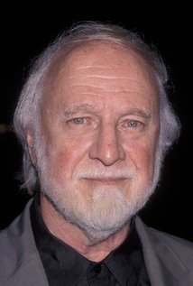

Autore: Richard Matheson
Editore: TimeCrime
Pagine: 432
Genere: Thriller
Anno Pubblicazione: 2016
Dave Newton si innamora di una bionda seducente e dal torbido passato che sembra collegata a una lunga, indecifrabile, serie di omicidi; in una tranquilla domenica mattina, per le strade di Manhattan, un uomo è vittima di una follia assassina e senza controllo che si abbatte su chiunque incroci il suo cammino; la notte da incubo di una pacifica famiglia borghese, tenuta in trappola dentro la propria casa da qualcuno che proviene dal passato oscuro dell’insospettabile padre...
Qualcuno si agita, Una domenica di rabbia e Incubo sono i tre lunghi racconti di cui si compone questa raccolta, pubblicata per la prima volta negli anni Cinquanta, all’inizio della carriera da scrittore di Richard Matheson, e per lungo tempo dimenticata. Crimine, omicidi a sangue freddo, terrore al suo stato più puro dosati con impareggiabile abilità narrativa.
Richard Matheson entrò a far parte della mia libreria e della mia vita da lettrice qualche anno fa, quando spopolò uno dei suoi romanzi più famosi, Io sono leggenda, di cui sicuramente conoscete anche il film: da quel momento in poi la mia visione sulla letteratura cambiò, mi ritrovai davanti ad un genio assoluto, un autore completo dotato di capacità incredibili, un autore in grado di ispirare altri scrittori di tutto rispetto, un vero fiore all'occhiello dell'editoria.
Per questo motivo non mi sono lasciata scappare una delle occasioni migliori che io abbia mai avuto fino ad ora, quella di leggere alcuni dei suoi racconti migliori raccolti in un unico volume, Noir, un tesoro che custodirò gelosamente.
Tre sono i racconti lunghi inseriti in questo volume rilegato, un mix di adrenalina e terrore allo stato puro.
Qualcuno si agita.
David Newton è uno scrittore dalle grandi ambizioni ed è proprio il suo lavoro che lo porta lontano dalla sua città, New York, in cerca di ispirazione per quello che potrebbe diventare il suo miglior libro. Mai avrebbe potuto immaginare la piega che, di lì a poco, avrebbe preso la sua vita. Quando in una giornata calda e soleggiata, in riva al mare, i suoi occhi incrociano il corpo bellissimo e sinuoso di una seducente ragazza bionda, tutte le sue certezze cedono, aprendogli la strada verso un amore tanto intenso quanto pericoloso: Peggy Ann Lister, infatti, nasconde un passato oscuro, una vita fatta di abusi e percosse che l'ha condotta, solo poco tempo prima, a commettere un delitto atroce. Ben presto la verità verrà a galla ed insieme ad essa alcuni irrefrenabili omicidi che insinueranno nella mente del giovane scrittore dubbi atroci: e se fosse stata Peggy? E' una donna instabile che alterna momenti di felicità immensa a momenti di sconforto e follia, sarebbe capace di uccidere nuovamente qualcuno?
Una domenica di rabbia.
Vincent poteva diventare un pianista affermato, le sue grandi doti musicali erano innegabili, sarebbe potuto diventare qualcuno, e sicuramente non si sarebbe ritrovato rinchiuso in un manicomio a subire violenze e rimproveri continui. Questa, però, non è la sua vita, non quella che avrebbe voluto e per la quale c'è un solo uomo da incolpare, anzi due: Saul, il padre, e Bob, quest'ultimo colpevole di avergli portato via il suo unico grande amore, Ruth, l'unica donna che abbia mai amato. Spinto da questa motivazione ed una grande forza d'animo, Vincent riesce a fuggire dalla sua prigione con un unico obiettivo: togliere la vita a chi ha reso la sua un vero inferno, deciso più che mai a riprendersi la sua amata. Quando con l'inganno si metterà sulla strada di Bob e Ruth, una domenica mattina come tante altre si trasformerà in un incubo che porterà con sé odio, morte e distruzione.
Incubo.
Ogni uomo nasconde un segreto inconfessabile, apparentemente innocuo, quello di Christopher Martin però ha una natura buia e pericolosa e quello che non sa è che bene presto tutto verrà a galla portandosi dietro dolore e grandi rimpianti. Un semplice mercoledì sera si trasformerà ben presto in un vero e proprio incubo di cui saranno prede, però, anche sua moglie Helen e sua figlia Connie: il passato di Chris si rivelerà con tutta la sua forza attraverso una semplice telefonata e con la stessa potenza metterà in pericolo le sua vita, ma soprattutto quella dei suoi affetti. Di che reato si è macchiato l'uomo?
Quanto pericolose possono essere state le sue azioni passate?
L'inizio di ogni racconto, ognuno a modo suo, è in grado di catturare l'attenzione del lettore in maniera esemplare, innestandogli dentro una curiosità morbosa: l'autore nei primi capitoli è in grado di creare quell'alone di mistero, che nel corso della lettura diverrà sempre più intenso e che si trasformerà gradualmente in vera e propria suspance, che porterà il lettore a divorare incurante del tempo che passa, pagine e pagine, disposto a tutto pur di conoscere la verità.
Sono molte le cose che hanno in comune i tre racconti, ma ognuno risulterà di per sé assolutamente imprevedibile, originale e adrenalico, rendendo impossibile al lettore decidere quale, tra i tre, sia il migliore.
Molto ben delineati sono i personaggi ed ovviamente in particolar modo i protagonisti delle vicende: l'ambizione e il buon animo di David Newton si paleseranno subito al lettore che non potrà non provare per lui un certo affetto e un senso di protezione che lo porteranno, inevitabilmente, a considerarlo un amico, quasi un figlio a volte, così come la diffidenza nascerà pian piano nel suo animo una volta fatta la conoscenza di Peggy, della quale il passato torbido è subito chiaro; alla stessa stregua, nel secondo racconto il grande amore tra Bob e Ruth affonderà nel cuore del lettore che vorrà proteggerli lui stesso dalla furia omicida di un folle, il Vincent che nessuno vorrebbe mai incontrare, per cui però sarà inevitabile provare un briciolo di commozione a causa di quella vita che, purtroppo, non ha mai potuto affrontare; infine, così come Helen proverà un grande senso si frustrazione e di smarrimento, le stesse emozioni pervaderanno il lettore facendo crescere il lui una voglia di riscatto contro Chris, la stessa che inizialmente si impadronisce della moglie del protagonista, ed in ugual modo l'odio e il risentimento per coloro che metteranno in pericolo le loro vite crescerà potete dentro di lui.
Immedesimarsi in ogni protagonista non sarà difficile e fin da subito il lettore si sentirà completamente immerso nelle vicenda narrate da Richard Matheson, le paure dei personaggi diverranno le sue, le angosce, le ansie e l'adrenalina cresceranno gradualmente in lui e statene certi, tutte queste emozioni non gli lasceranno via di scampo e lo trascineranno in un vortice senza via d'uscita.
L'ambientazione è la medesima per tutti e tre i racconti e l'autore è in grado di mostrarci una Los Angeles del tutto differente, dove al divertimento si sostituisce la paura e dove la vita di ciascuno corre un pericolo inimmaginabile.Matheson tinge la città americana di rosso, quel rosso vivido del sangue dall'odore ferroso e fortemente nauseante che tinge ogni crimine, con la speranza che ogni delitto possa trovare, in qualche modo, giustizia.
Inoltre, per quanto riguarda le tematiche, una in particolare diviene il filo conduttore dei tre racconti: il Passato. Quanto pericoloso può essere il passato di un uomo? E' questo che l'autore ha voluto mettere in luce creando tre storie fortemente differenti tra loro: il passato fragoroso di una persona può venire a galla in men che non si dica, anche con un minimo espediente che per quanto piccolo possa essere risulterà doloroso e assolutamente disastroso.
Siete pronti a vivere sulla vostra pelle terrore, adrenalina e ansia allo stato puro?
Infine, lo stile, così come lo ricordavo, risulta essere molto scorrevole e particolarmente intenso: Richard Matheson è in grado di far percepire ogni singola sensazione od emozione possibile al lettore, facendolo immedesimare nelle sue storie con la semplice forza delle parole, immergendolo in un mondo dal quale è impossibile staccarsi.
Noir è uno di quei libri che non può assolutamente mancare nella libreria di ogni lettore e Matheson è uno di quegli autori che non può non essere letto almeno una volta nella vita.
 L'AUTORE - Scrittore e sceneggiatore statunitense. Autore di romanzi e racconti che hanno forgiato il gusto e le caratteristiche del ‘fantastico’ contemporaneo influenzando profondamente altri linguaggi.
Se siete lettori appassionati visitate questo blog:
ilcoloredeilibri.blogspot.it